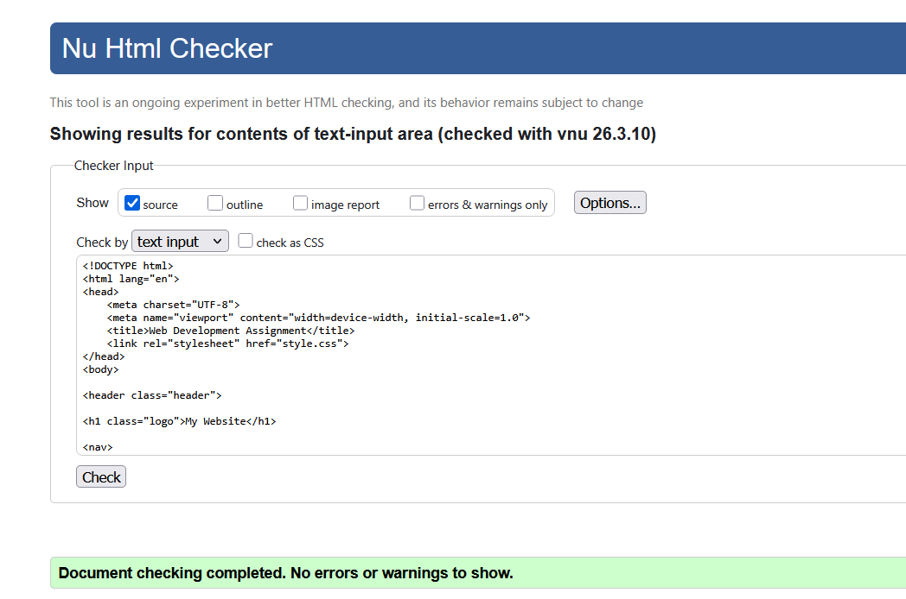
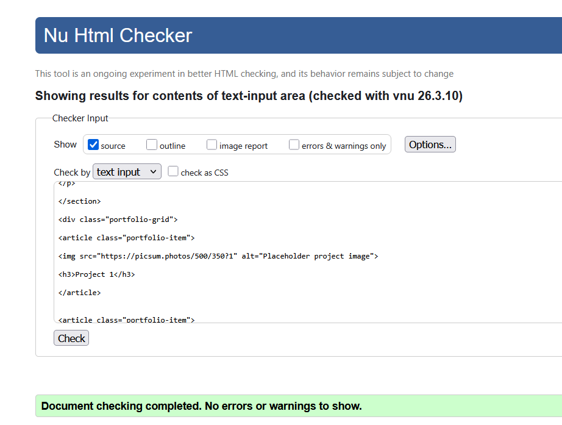
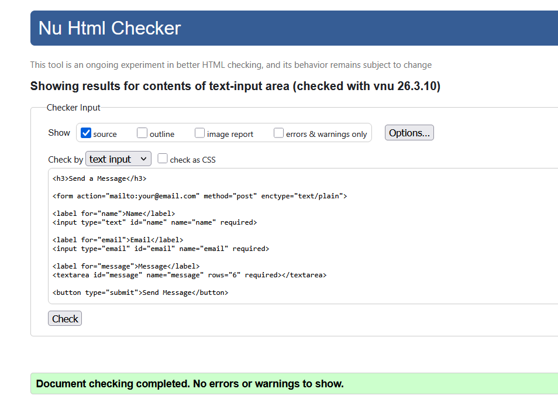
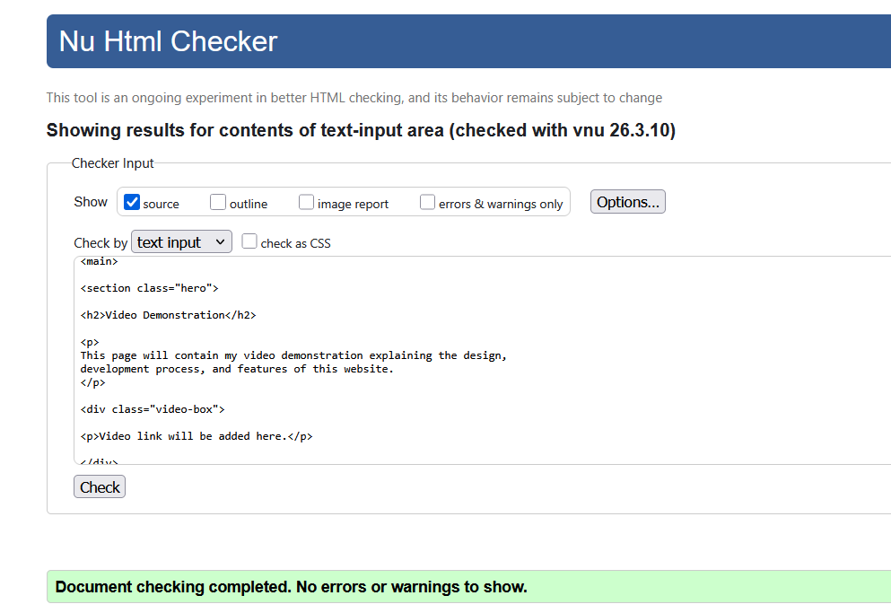
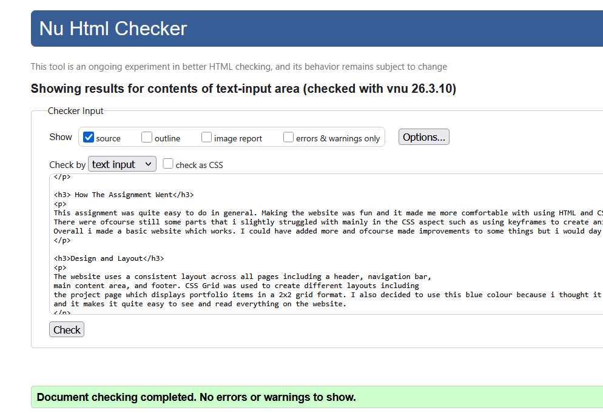
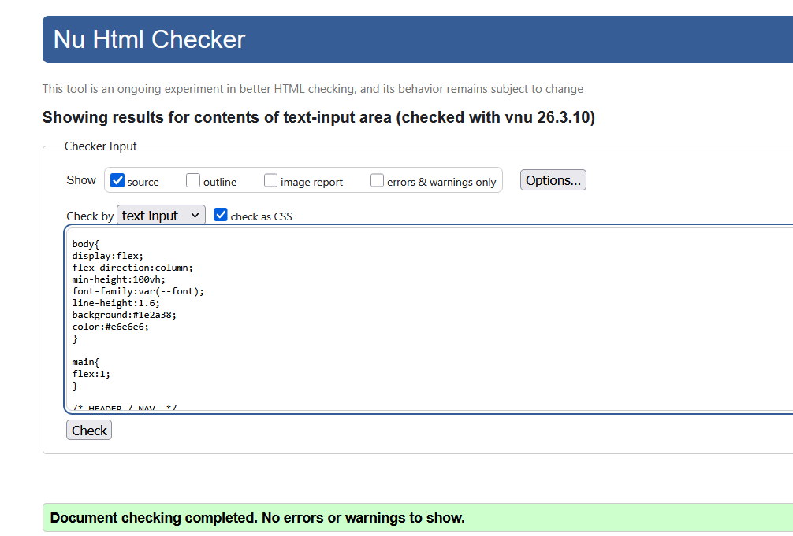

Report
Introduction
This report explains the development of my portfolio website for the web development assignment. The website was created using HTML and CSS and shows responsive design, structured layouts, and version control using Git and GitHub.
How The Assignment Went
This assignment was quite easy to do in general. Making the website was fun and it made me more comfortable with using HTML and CSS. There were ofcourse still some parts that i slightly struggled with mainly in the CSS aspect such as using keyframes to create animations. Overall i made a basic website which works. I could have added more and ofcourse made improvements to some things but i would day that i am happy with the outcome.
Design and Layout
The website uses a consistent layout across all pages including a header, navigation bar, main content area, and footer. CSS Grid was used to create different layouts including the project page which displays portfolio items in a 2x2 grid format. I also decided to use this blue colour because i thought it would match current looks for a website, and it makes it quite easy to see and read everything on the website.
Responsive Design
Media queries were used to ensure the website works on both desktop and mobile devices. The navigation menu changes into a hamburger menu on smaller screens to improve usability.
Version Control
Git was used to manage the development of the website. Separate branches were created for different pages and features. Changes were committed regularly and I merged into the main branch once completeting all pages.
Validation
All pages were validated using the W3C HTML and CSS validation tools. The screenshots below show the validation results confirming that the website code contains no major errors.






Conclusion
Overall, this project demonstrates the use of semantic HTML, CSS styling, responsive design techniques, and version control. The website provides a foundation for a personal portfolio website, and i will probably expand on this in the coming years.